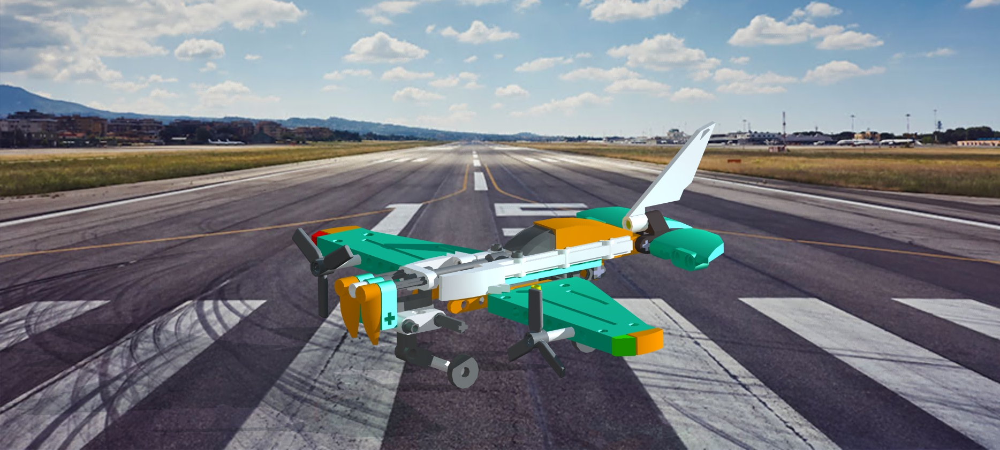

Engineering Design · ERAU
Role
Individual — 3D Design & Drawing Package
EGR 120: Introduction to Engineering · Spring 2023
Tools
BrickLink Studio · SolidWorks · Rendering
Key Contributions
The EGR 120 final project required designing a complete LEGO airplane model and producing a formal engineering drawing package that documents the design to industry-standard drafting conventions. The project covered the full design-to-documentation workflow: digital 3D modeling using LEGO-specific CAD software, photorealistic rendering, and the translation of a 3D assembly into a structured set of 2D engineering drawings in SolidWorks.
The airplane was designed with an emphasis on visual accuracy and structural plausibility — selecting LEGO parts whose geometry approximates real aircraft components such as fuselage panels, wing surfaces, engine nacelles, and landing gear struts. The finished design is a twin-engine aircraft featuring a T-tail empennage and tricycle undercarriage, rendered against a runway background to simulate a real aircraft environment.

The airplane was designed in BrickLink Studio, a parametric LEGO CAD environment where each component is selected from an actual LEGO part library and snapped into position using the same stud-and-anti-stud connection logic as physical LEGO assembly. This constraint — that every part must be a real LEGO piece with real connection points — forces design decisions that parallel actual aircraft design: the fuselage cross-section is governed by available brick widths, wing sweep is approximated by stepped LEGO plate offsets, and nacelle geometry is shaped by cylindrical and curved specialty parts.
The aircraft features a twin-engine tractor configuration, a T-tail with the horizontal stabilizer elevated atop the vertical fin, mid-mounted wings, and a retractable-style tricycle landing gear built from LEGO technic axle and wheel components. The teal, orange, and white color scheme was chosen to maximize visual contrast across the major structural groupings — fuselage, wings, and empennage — making the design readable in both rendered and orthographic views.
The final rendering was produced using BrickLink Studio’s built-in ray-trace renderer, with the output composited over a runway photograph to place the model in a realistic aviation context.
The 17-page drawing package was produced in SolidWorks and documents the LEGO airplane design using formal engineering drafting conventions. Each sheet follows a consistent title block format including project name, author, scale, sheet number, and revision fields. The package includes multiview orthographic projections (front, top, right-side, and isometric views) of the full assembly, with dimensions and annotations applied according to ANSI/ASME drawing standards introduced in EGR 120.
Key elements of the drawing package include:
Translating the BrickLink Studio 3D geometry into SolidWorks required re-modeling key subassemblies as simplified solid bodies, since BrickLink Studio does not natively export in SolidWorks-compatible formats. This step reinforced the relationship between 3D design intent and the 2D projections used to communicate that intent in formal engineering documentation.
Design constraints drive creative problem-solving
Working within the LEGO part library means every design choice is constrained by available geometry. Achieving aerodynamic shapes from rectilinear bricks requires the same kind of trade-off thinking that governs real aircraft design: optimizing within a fixed solution space rather than designing without limits.
Engineering drawing is a precise communication standard
A drawing is not a picture — it is a contract. Producing 17 pages of formal documentation to ANSI/ASME standards established early habits around dimension placement, view selection, title block discipline, and scale consistency that underpin every subsequent CAD project.
3D-to-2D translation requires deliberate view selection
Choosing which views fully define a part — without redundancy or ambiguity — is a non-trivial skill. For complex assembled geometry, selecting the front, top, and side orientations that minimize hidden lines and convey the maximum information in the fewest sheets is a design decision in itself.
Rendering grounds a design in physical context
Compositing the model over a real runway photograph communicates scale and intent in a way that an orthographic drawing cannot. Photorealistic rendering is a standard deliverable in aerospace concept design, and producing one early — even for a LEGO model — builds intuition for how design decisions read at full scale.